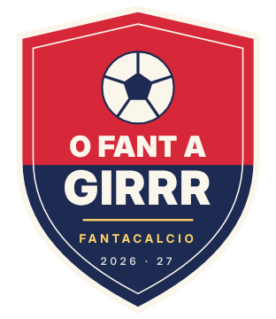

Tutto quello che cambia in O Girrr, giorno per giorno: Spogliatoio, Totogirrr, Curva, Giornale, Tabellone e il resto. Si aggiorna da solo.
Gli aggiornamenti automatici dei dati sono nella pagina Aggiornamenti.